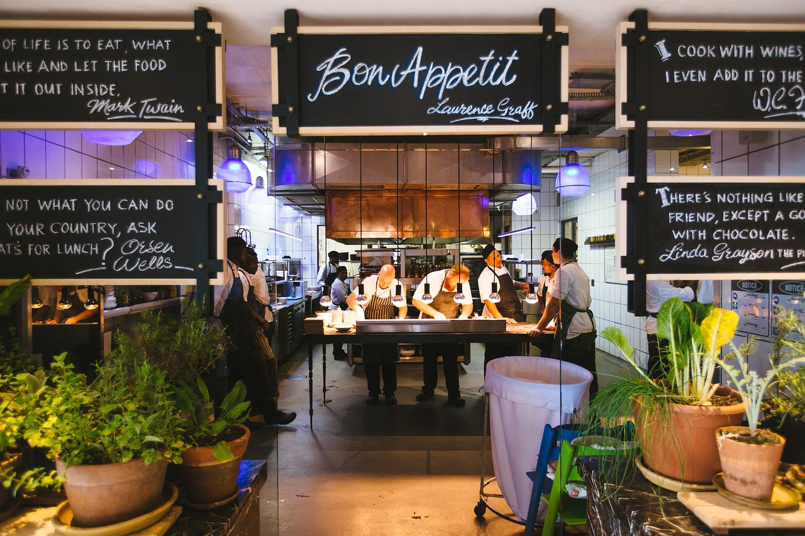

Vær synlig! Også på nett
Digital markedsføring for service- og serveringsbransjen

Jeg har lang erfaring fra utelivsbransjen, og nå vil jeg hjelpe serveringssteder og servicebedrifter å bli funnet på nett gjennom nettsider, SEO og innholdsproduksjon.
Om meg